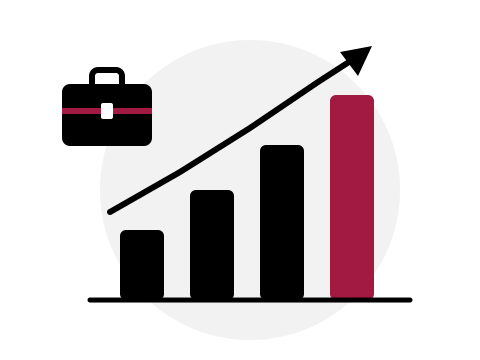

ODS 8 · Agenda 2030 da ONU
Trabalho decente e crescimento econômico: Uma proposta para geração de empregos.
Analisamos por que o mercado, sozinho, não garante empregos dignos e propomos como o Estado e a sociedade podem mudar esse cenário. E você, estudante, pode fazer parte disso.
Começar a leitura
Explore a proposta
Clique em um dos quadros para ler cada etapa.
Estudantes em ação
Nossa proposta também é um serviço: uma rede de estudantes voluntários que levam o que aprendem para a comunidade.
Quero participar